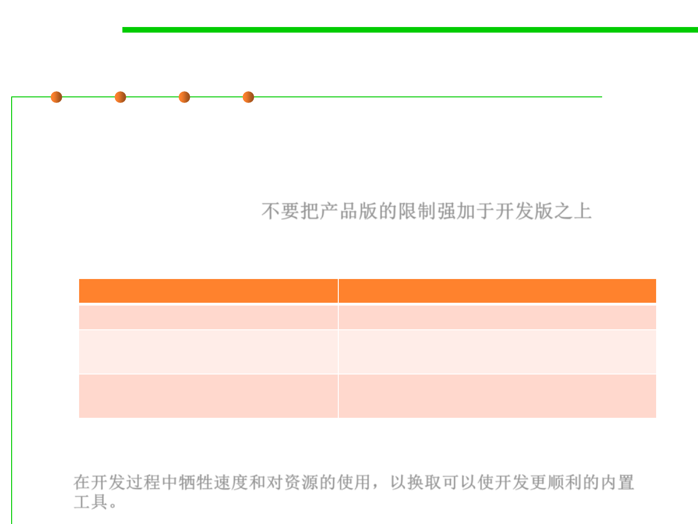

7.3 Assertions and Defensive Programming
(3) Debugging Aids 调试助手/辅助调试的代码
▪ Debugging aids is a key aspect of defensive programming for
quickly detecting errors. (See 7.4 debugging)
▪ Don’t Automatically Apply Production Constraints to the
Development Version. 不要把产品版的限制强加于开发版之上
– A common programmer blind spot is the assumption that limitations of
the production software apply to the development version.
production version
has to run fast
has to be stingy with resources
节约使用资源
shouldn’t expose dangerous
operations to the user
development version
might be able to run slow
might be allowed to use resources
extravagantly 可奢侈地使用资源
can have extra operations that you can use
without a safety net
– Be willing to trade speed and resource usage during development in
exchange for built-in tools that can make development go more smoothly.
在开发过程中牺牲速度和对资源的使用，以换取可以使开发更顺利的内置
工具。